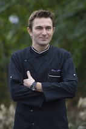

L'entreprise
 Une entreprise n’a d’intérêt à mes yeux que si elle est portée par un projet commun, reposant sur des hommes, évoluant sans cesse et se renouvelant. Nous avons la chance et la liberté de pouvoir créer des évènements, de les imaginer, de les rêver et de les faire naître.
Souvent, la simplicité reste une valeur sure, et nous essayons d’exprimer au travers d’un mets l’équilibre complexe entre la présentation, la saveur et le goût des produits. Quoi qu’il en soit, nous prenons un véritable plaisir à confectionner ces mets, et aimons penser qu’il y a une corrélation directe entre le plaisir que nous prenons et celui que nous espérons vous apporter. Olivier Theron
{% if site.data.testimonials.size > 0 %}
{% endif %}
{% for tm in site.data.testimonials %}
 {% endfor %}
{% endfor %}
{{ tm.testimonial }}
{{ tm.name }} {{ tm.company }}